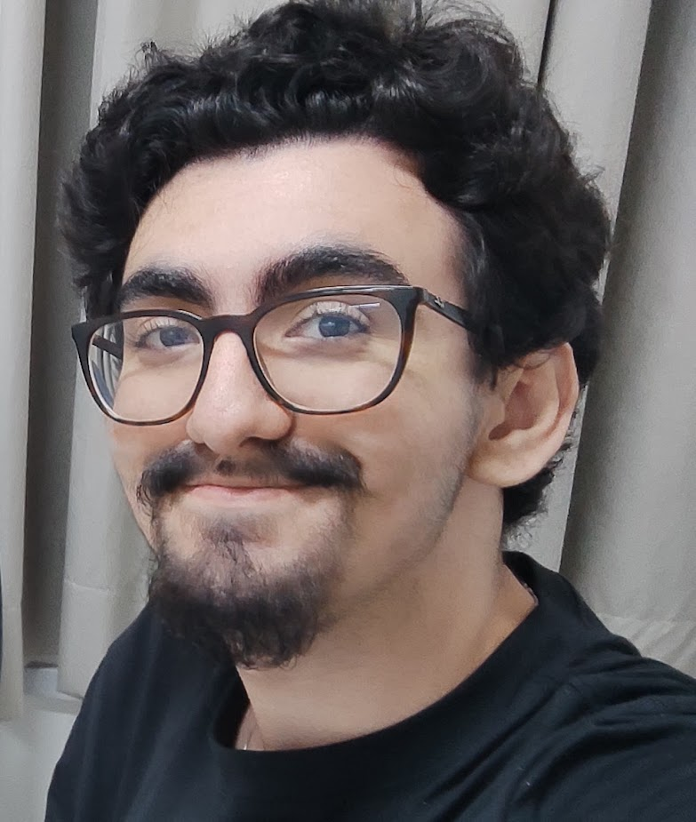

Matheus Luiz Neves Johnsson
Engenharia da Computação - Universidade Senai Cimatec & Computação - UFBA
Bolsista QUIIN - HIIVE LAB
Sobre Mim
Sou estudante de Engenharia de Computação no SENAI CIMATEC e de Computação na Universidade Federal da Bahia (UFBA), com interesse em desenvolvimento de software, ambientes imersivos em realidade virtual e pesquisa aplicada. Atualmente atuo como Bolsista do programa QUIIN no Hiive Lab (SENAI CIMATEC), desenvolvendo soluções tecnológicas voltadas para inovação no ensino e buscando sempre conectar a pesquisa acadêmica a aplicações práticas de impacto.
Meus Projetos
Quiin VR
O projeto QUIIN VR propõe o desenvolvimento de um ambiente imersivo de realidade virtual para o ensino de conceitos de computação e criptografia quântica. Utilizando a Unreal Engine e dispositivos de realidade virtual, a experiência permitirá aos usuários explorar conceitos abstratos de forma interativa, com destaque para o protocolo BB84, contribuindo para a democratização do ensino de tecnologias quânticas e tornando o aprendizado mais visual, acessível e envolvente.
WINE
O projeto WINE tinha como proposta um tour virtual imersivo por uma vinícola de Morro do Chapéu, Bahia, utilizando a Unreal Engine, imagens e vídeos em 360°. A experiência permitirá explorar a vinícola, conhecer sua produção, terroir e aspectos culturais, ampliando o acesso ao enoturismo e valorizando a vitivinicultura regional.
Exposição didática de invertebrados fosseis
O projeto propõe a criação de modelos 3D de fósseis de invertebrados, visando democratizar o acesso ao conhecimento paleontológico. As peças, acompanhadas de informações científicas, serão utilizadas em atividades de ensino, divulgação científica e formação acadêmica, contribuindo para aproximar estudantes e sociedade da paleontologia.
Presence Training
tacar a descrição
Habilidades
- Computação Quântica
- C++
- C
- C#
- Java
- Python
- Unreal Engine 5
- Unity
- GameMaker
- Realidade Virtual (VR)
- Impressão 3D (Filamento & Resina)
- Modelagem 3D
- Git / GitHub
- Pesquisa e Desenvolvimento
- Englis Certificate C2
- Google Cloud Computing
- Design de Games
Experiência
QUIIN - Hiive Lab
Bolsista de Pesquisa e Desenvolvimento
Maio de 2026 - Presente
Universidade Senai Cimatec
Voluntario
Junho de 2025 - Junho de 2026
Universidade Federal da Bahia
Voluntario
Junho de 2025 - Junho de 2026
Certificações & Cursos
- Curso de curta duração - Unreal Engine 5 Blueprints
- Curso de curta duração - Modelagem & Impressão 3D
- Curso de curta duração - Java + Programação Orientada a Objetos
- Curso de curta duração - Impressão 3D em Resina
- Curso de curta duração - Desenvolvimento de Jogos com Unity
- Curso de curta duração - Curso GameMaker
- Curso de curta duração - Captação de imagens com câmera 360° para Realidade Virtual
- Curso de curta duração - Google Cloud Computing Foundations
- Curso de curta duração - Hardware de Computadores
Contato
Entre em contato comigo:
E-mail GitHub LinkedIn